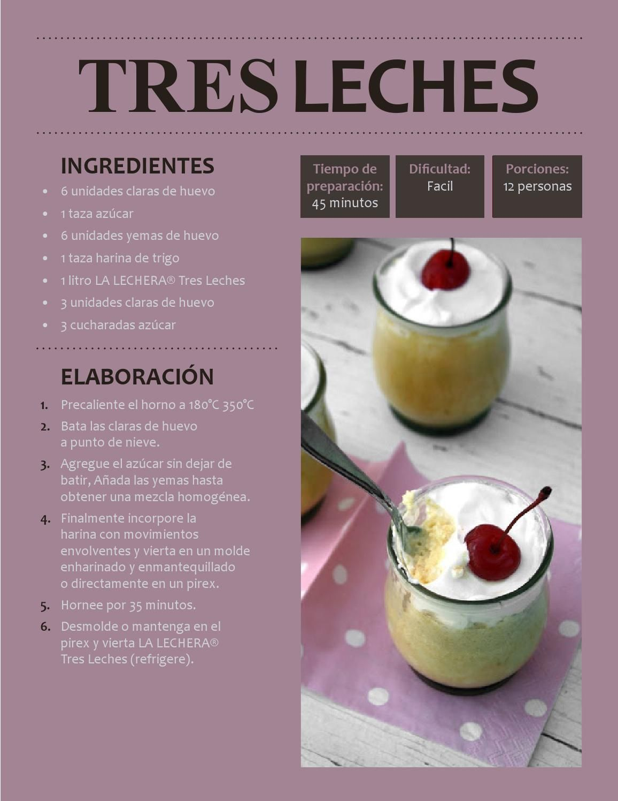

Receta postre tres leches:
Ingredientes:
| Cantidad | Tipo |
| 1 | Taza Azúcar |
| 6 | Unidades Yema |
| 1 | Taza harina 0000 |
| 1/2 | Cucharadita Polvo Para Hornear |
| 6 | Unidades Clara De Huevo |
| 1/2 | Cucharadita Sal |
| 300 gr | Gramos Leche |
| 1 | Cucharadita Esencia De Vainilla |
| 280 | Gramos Crema De Leche |
| 395 | Gramos Leche Condensada Nestlé |
| 2 | Tazas Crema De Leche (Para decorar) |
| 2 | Cucharadas Canela En Polvo (Para decorar) |
Instrucciones:
- Para el bizcochuelo, batir las claras hasta formar picos firmes. Agregar la sal y el azúcar en forma de lluvia y batir hasta obtener un merengue. Añadir la esencia de vainilla y las yemas.
- Incorporar la harina con el polvo para hornear tamizados y unir con movimientos envolventes.
- Colocar en un recipiente enharinado y enmantecado y hornear a temperatura media (180 °C) durante 30 minutos aproximadamente.
- Con la ayuda de un palillo pinchar el bizcochuelo repetidamente.
- Para embeber el bizcochuelo mezclar la leche, la leche condensada y la crema y verter sobre la torta. Dejar enfriar bien en la heladera.
- Decorar con crema batida y espolvorear con canela. Servir cortada en cuadrados.